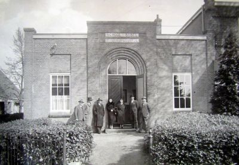

Verzetsplein (Soest)

| Locatie | Soest |
| Functie | Plein / locatie van voormalige school |
| Bekend om | Voormalige Christelijke Huishoudschool |
Inhoudsopgave
Over
Het Verzetsplein is een locatie in Soest die een rol heeft gespeeld in de geschiedenis van het Griftland College. Op deze plek stond vroeger de Christelijke Huishoudschool, een onderwijsinstelling die later onderdeel werd van de ontwikkeling van het huidige Griftland College.
Geschiedenis
Door het toenemende aantal leerlingen in de regio ontstond er behoefte aan meer onderwijsruimte. In dit kader werd gebruikgemaakt van de Christelijke Huishoudschool die zich bevond op de locatie van het huidige Verzetsplein.
Deze school speelde een belangrijke rol in het opvangen van de groei van het aantal leerlingen. Uiteindelijk leidde deze uitbreiding tot verdere ontwikkeling en centralisatie van onderwijs, wat bijdroeg aan het ontstaan van het Griftland College zoals dat vandaag de dag bestaat.
Betekenis voor het Griftland College
Het Verzetsplein vormt een historisch onderdeel van de ontwikkeling van het Griftland College. De locatie herinnert aan een periode van groei en verandering binnen de schoolgemeenschap.
Hoewel de oorspronkelijke school niet meer in gebruik is, blijft de plek verbonden met de geschiedenis van het onderwijs in Soest en de uitbreiding van het Griftland College.